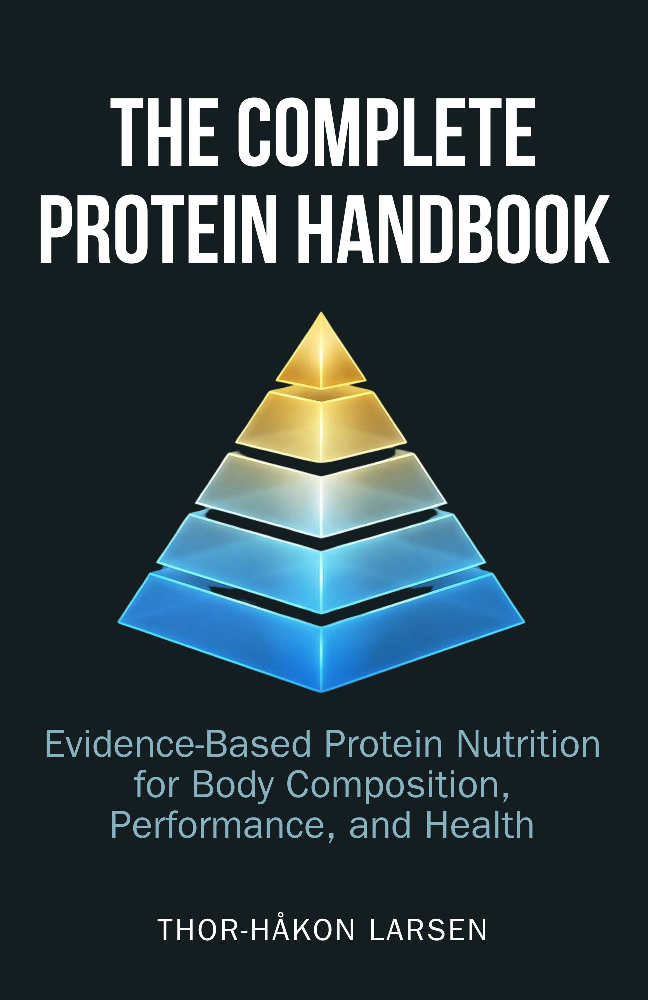

The Complete Protein Handbook
Evidence-Based Protein Nutrition for Body Composition, Performance, and HealthEvidensbasert proteinernæring for kroppssammensetning, ytelse og helse
The last comprehensive protein reference was published in 2007. Since then, DIAAS replaced PDCAAS, meta-analyses refined intake ceilings, and GLP-1 created millions needing muscle-sparing strategies. This is the update the field has needed for nearly two decades.Den siste omfattende proteinreferansen ble publisert i 2007. Siden den gang har DIAAS erstattet PDCAAS, metaanalyser raffinert inntakstak, og GLP-1 skapt millioner som trenger muskelsparende strategier. Dette er oppdateringen feltet har trengt i nesten to tiår.
About the BookOm boken
The Complete Protein Handbook synthesizes 19 years of new protein science into a single, fully cited resource. It covers muscle protein synthesis and the leucine threshold, context-dependent dosing for surplus, deficit, aging, endurance, and obesity, DIAAS-based source quality rankings, timing hierarchies, GLP-1 interactions, health safety markers (kidneys, liver, bone), and practical meal planning with distribution strategies. Every recommendation carries an evidence grade; every claim is sourced.
The Complete Protein Handbook syntetiserer 19 år med ny proteinvitenskap til én enkelt, fullt sitert ressurs. Den dekker muskelproteinsyntese og leucinterskelen, kontekstavhengig dosering for overskudd, underskudd, aldring, utholdenhet og fedme, DIAAS-baserte kvalitetsrangeringer, tidshierarkier, GLP-1-interaksjoner, helsesikkerhetsmarkører (nyrer, lever, bein) og praktisk måltidsplanlegging med distribusjonsstrategier. Hver anbefaling har en evidensgrad; hver påstand er kildebelagt.
What You’ll LearnHva du vil lære
- How muscle protein synthesis actually works — the leucine threshold, mTOR pathway, and refractory period explained for practitionersHvordan muskelproteinsyntese faktisk fungerer — leucinterskelen, mTOR-signalveien og den refraktære perioden forklart for praktikere
- Context-dependent protein targets: surplus (1.6–2.2 g/kg), deficit (2.0–3.1 g/kg LBM), aging, endurance, obesity, pregnancyKontekstavhengige proteinmål: overskudd (1,6–2,2 g/kg), underskudd (2,0–3,1 g/kg fettfri masse), aldring, utholdenhet, fedme, graviditet
- Complete DIAAS rankings for 30+ protein sources with leucine content per servingKomplette DIAAS-rangeringer for 30+ proteinkilder med leucininnhold per porsjon
- The real timing hierarchy: daily total > distribution > peri-workout > pre-sleep caseinDet reelle tidshierarkiet: daglig total > distribusjon > peri-trening > kasein før sengetid
- The first book chapter on protein optimization during GLP-1 agonist therapyDet første bokkapittelet om proteinoptimalisering under GLP-1-agonistbehandling
- Evidence-based answers to every “isn’t high protein bad for your kidneys?” questionEvidensbaserte svar på alle «er ikke høyt protein dårlig for nyrene?»-spørsmål
Who This Book Is ForHvem boken er for
For nutrition coaches, dietitians, sports scientists, and serious athletes who want a single, comprehensive, evidence-based protein reference. Also for medical professionals advising GLP-1 patients and aging populations on protein optimization. If you recommend protein to anyone, this book gives you the science to do it right.
For ernæringscoacher, ernæringsfysiologer, idrettsvitere og seriøse utøvere som vil ha én enkelt, omfattende, evidensbasert proteinreferanse. Også for helsepersonell som rådgir GLP-1-pasienter og eldre populasjoner om proteinoptimalisering. Hvis du anbefaler protein til noen, gir denne boken deg vitenskapen for å gjøre det riktig.
DetailsDetaljer
LanguageSpråk
EnglishEngelsk
GenreSjanger
Protein & Nutrition ScienceProtein & ernæringsvitenskap
ComparableSammenlignbare
Dietary Protein and Resistance Exercise (Tipton & van Loon), The Muscle & Strength Pyramid: Nutrition (Helms), Protein: A Comprehensive Guide (Antonio)
Stay in the LoopHold deg oppdatert
Get notified when this title is available.Få beskjed når denne tittelen er tilgjengelig.
SubscribeAbonner